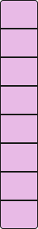
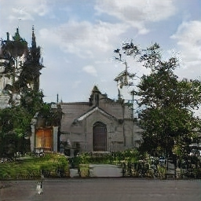
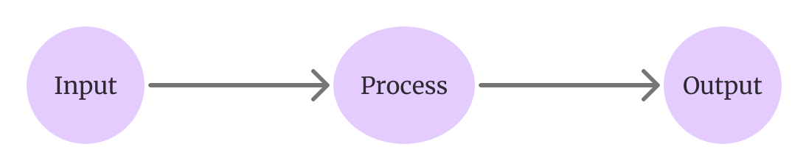
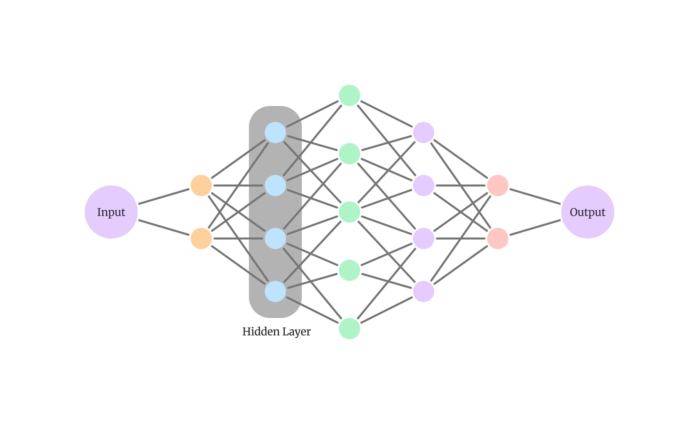

Machine Learning is like giving computers the ability to learn from data and make decisions without being explicitly programmed. It's all about teaching computers to spot patterns and make predictions based on examples.
Think of it like this: Imagine you're training a puppy. You show it different toys and tell it which ones are balls and which ones are bones. Eventually, the puppy learns to recognize balls and bones on its own, even if they're different colors or sizes. That's kind of what we do with machines, but instead of toys, we use data.
Welcome to XGanArt!
Our project, born out of the collaborative efforts of bachelor students at ITU University, aims to unlock the mysteries of neural networks, specifically focusing on generative models. Leveraging the groundwork laid by the open-source project GAN Dissection from MIT-IBM Watson AI Lab we proudly introduce our eXplainable version of GANPaint - XGanArt.
Below, you’ll see a neural network with three specific layers highlighted.
Neural networks are composed of layers of interconnected neurons. Data from the input is used by the neurons at the
first layer to produce a calculated output. If this output is above a set threshold, the neuron is ‘activated’ and
forwards the calculated output to the next layer of neurons. This data is then used by the next layer and so on.
The concepts (objects such as trees or parts like the dome of a building) that the network has learned to recognize at
the chosen layer are shown in the bar graph.
Click on one of the higlighted layers to see the details for that layer.
When you are done, you can click the layers in upper right corner to start drawing
Input
→

Latent vector
Layer 4
Layer 7
Layer 10
→

Output
Click a layer to see how the data and interactive slider changes


Here are some of the questiones you might have while navigating our application. If you want to know more about a topic presented, just click the collapsible for more information!
Well, that's where neural networks come in!
Neural networks are like the brains behind GenAIs. They're made up of layers of interconnected neurons, similar to the neurons in our brains. Each layer processes information and passes it on to the next layer, sort of like a relay race where each runner hands off the baton to the next.
This process is all hidden from the user, hence why all the layers between the input- and output-layers are called ‘hidden layers’.
We train Neural Networks by showing them lots of pictures and telling them what's in each one. But instead of copying, they learn from the examples, looking for patterns and similarities between the new image and the ones it's seen before.
When a neural network is presented an image, whether it's a photo of a cat or a picturesque church, that image undergoes a journey through the network, traversing layer by layer. At each hidden layer, the network analyzes different features of the image, such as colors, shapes, and textures. These layers work together like a team of artists, each contributing its expertise to capture the essence of the input image. This knowledge can then be used to create something new and unique.
When you talk to your friends about Machine Learning, one of the first things that might come to mind would be ChatGPT - programs that seem to understand what you're saying and respond with witty comments or helpful information. Many available Generative AIs (GenAI) - such as ChatGPT - take some input from the human user, and responds with a generated output.

But have you ever stopped to wonder how GenAIs actually work?Well, that's where neural networks come in!
Neural networks are like the brains behind GenAIs. They're made up of layers of interconnected neurons, similar to the neurons in our brains. Each layer processes information and passes it on to the next layer, sort of like a relay race where each runner hands off the baton to the next.
This process is all hidden from the user, hence why all the layers between the input- and output-layers are called ‘hidden layers’.

But what if instead of text, you would like to work with images?We train Neural Networks by showing them lots of pictures and telling them what's in each one. But instead of copying, they learn from the examples, looking for patterns and similarities between the new image and the ones it's seen before.
When a neural network is presented an image, whether it's a photo of a cat or a picturesque church, that image undergoes a journey through the network, traversing layer by layer. At each hidden layer, the network analyzes different features of the image, such as colors, shapes, and textures. These layers work together like a team of artists, each contributing its expertise to capture the essence of the input image. This knowledge can then be used to create something new and unique.
Let's talk about something really cool: Generative Adversarial Networks, or GANs for short.
GANs are like artistic duos. Imagine one artist, the generator, creating counterfeit artwork, and another artist, the discriminator, trying to spot the fakes. But here's the twist: as the generator gets better at making fakes, the discriminator gets better at spotting them. It's like a never-ending game of cat and mouse.
With GANs, we can generate new unique images that look just like the real thing. Imagine having a superpower that lets you paint with neural networks, anyone can do it; That's exactly what GANPaint does. With our innovative interface, you can interact directly with the hidden layers of neural networks, the magic behind GANs.
But how do GANs learn to produce such remarkable images? It all begins with layers and training.
In the realm of GANs, layers are the building blocks of creativity. These layers represent the neural networks' depth and complexity, each one specializing on different aspects of image generation.
In the first layers, the neural network learns basic features like edges and simple shapes. It's like teaching a child to recognize the outlines of objects. As the image progresses through the middle layers, the network starts combining these basic features to identify more complex patterns and structures, such as architectural details, trees, or clouds in the sky. Think of it as the child learning to recognize different parts of a church or the intricate details of outdoor scenery.
Finally, the network puts all these pieces together to generate the final output. So, the child is completing a puzzle, where each piece represents a different aspect of the image, coming together to form the complete picture.*
During the training process, the generator learns to transform the input into coherent visual representations. On the other hand, the discriminator undergoes its own training regimen. Tasked with distinguishing between genuine and synthetic images, it examines the creations generated by the generator, providing valuable feedback to guide its improvement.
Together, through countless iterations of training, the generator and discriminator engage in a captivating dance of creation and critique. With each round, the generator improves its skills, producing images that are increasingly indistinguishable from reality, while the discriminator sharpens its judgment, becoming ever more adept at detecting subtle nuances that look artificiality.
In the realm of GANPaint, this intricate interplay between layers and training forms the backbone of our innovative interface. By delving into the hidden layers of neural networks, you're not just interacting with pixels – you are starting your journey of understanding the inner workings of GenAIs.
When you start to use GanPaint, you might notice that certain objects, like doors, can only be added in specific places, such as on the sides of buildings. But why is that?
Well, it all comes down to how the AI learns and understands the world. When training the AI, it's exposed to a vast amount of data, including images of buildings, landscapes, and various objects in their natural contexts. Through this exposure, the AI learns to associate certain objects with specific environments.
So, when you try to draw a door in the sky, the AI recognizes that it's not a typical location for a door based on its training data. It's like trying to fit a piece of puzzle in the wrong hole – it just doesn't match the patterns the AI has learned.
However, when you add a door to the side of a building, the AI knows that this is a common location for doors in its training data. It seamlessly integrates the door into the scene, using its learned knowledge to create a realistic and contextually appropriate addition.
In essence, the limitations on where certain objects can be added reflect the AI's understanding of the world based on its training data. It's a fascinating glimpse into the inner workings of machine learning and the complex relationship between data, context, and creativity.
For this project, we have selected three hidden layers for your exploration: layers 4, 7, and 10. Each layer offers a distinct perspective on image generation, reflecting the progressive complexity of the neural network.
In the earlier layers, such as layer 4, the network begins to discern basic shapes and features, laying the foundation for understanding the visual content. These layers typically identify simpler concepts, like edges and basic shapes.
Moving towards the middle layers, like layer 7, the network's comprehension deepens, recognizing more intricate patterns and structures within the images. Here, concepts become more nuanced, encompassing a broader range of visual elements, from objects to parts and materials.
Finally, in the later layers, like layer 10, the network focuses on finer details such as colors, textures, and patterns. While earlier layers may identify a 'tree' as a basic object, layer 10 captures the essence of a tree through its unique color palette and texture, offering a more abstract representation.
So, when drawing with concepts like 'tree' across these layers, you'll notice significant variations in the output. In layer 4, it may depict a basic outline, while in layer 10, it could manifest as a rich blend of colors and textures resembling foliage.
But how do they do it? How does GanPaint know exactly what to create? Well, that's where the genius of GAN Dissection comes into play!
Researchers at IBM and MIT used a technique called GAN Dissection to dig deep into the inner workings of our GAN model. They wanted to understand why the AI behaves the way it does and how it's able to create such realistic and contextually appropriate objects.
Imagine you have a magic magnifying glass that lets you zoom into the AI's brain, layer by layer. As you zoom in, you'll see different parts of the network light up, each responsible for recognizing specific features in the scene.
For example, one part might specialize in identifying buildings, while another focuses on doors. As the AI processes the scene, these specialized parts work together to compose the final image, seamlessly integrating objects like doors into the surroundings.
But here's the coolest part: GAN Dissection allows researchers to dissect these individual parts of the network and understand exactly how they contribute to the final output. They can see which neurons light up when a door is added, how they interact with other parts of the network, and even tweak them to create new and exciting effects.
So, the next time you use GanPaint demo and marvel at the realistic doors and other objects you can add to your scenes, remember that it's all thanks to the power of GAN Dissection and the incredible insights it provides into the inner workings of our AI model.